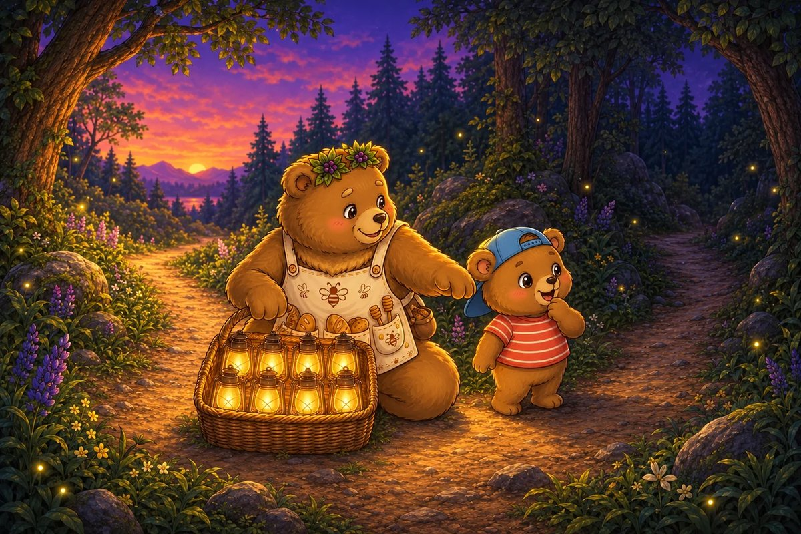
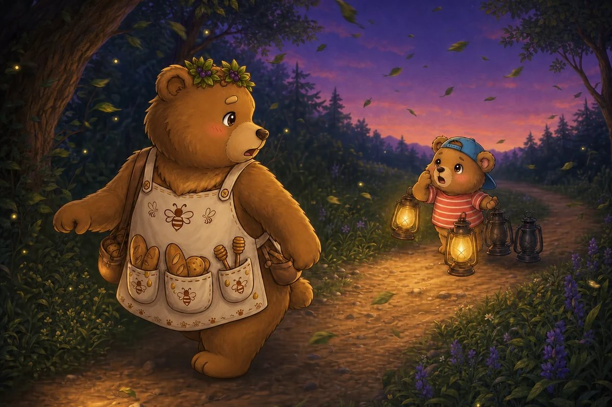
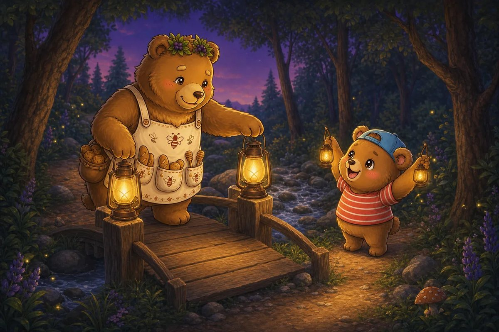
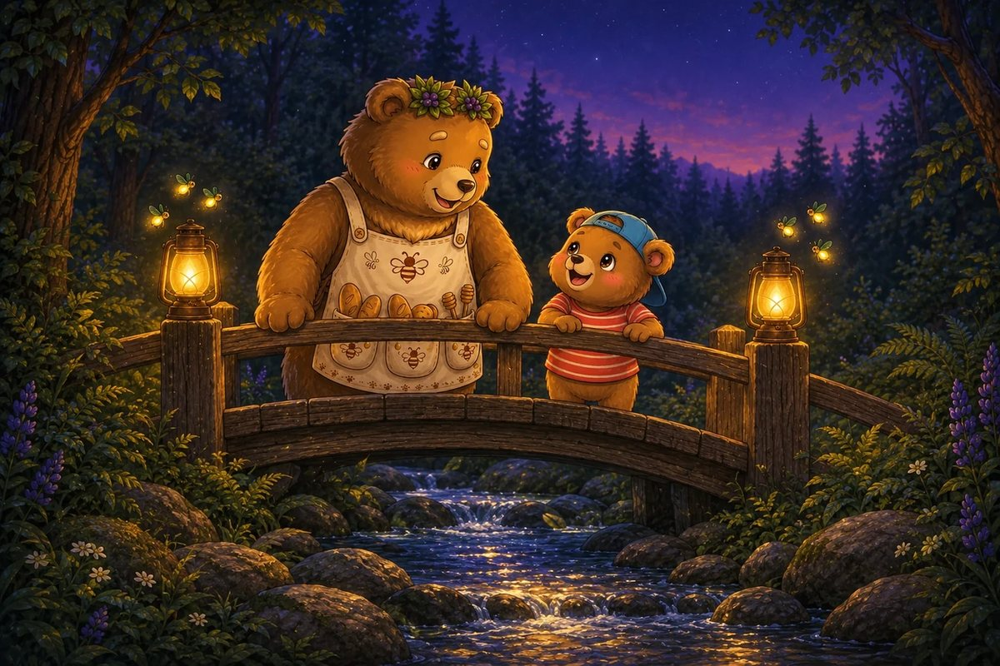
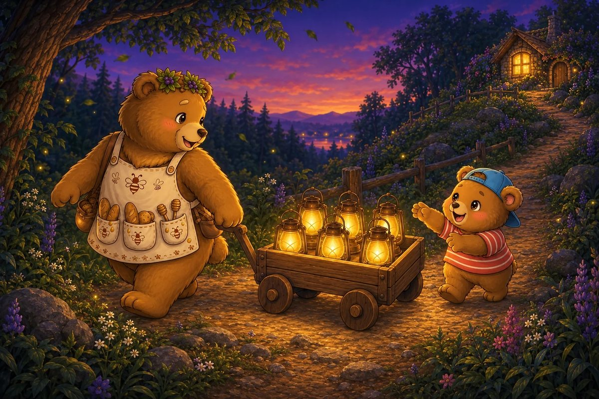
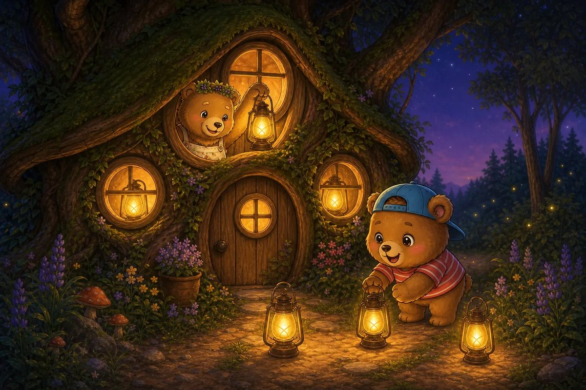
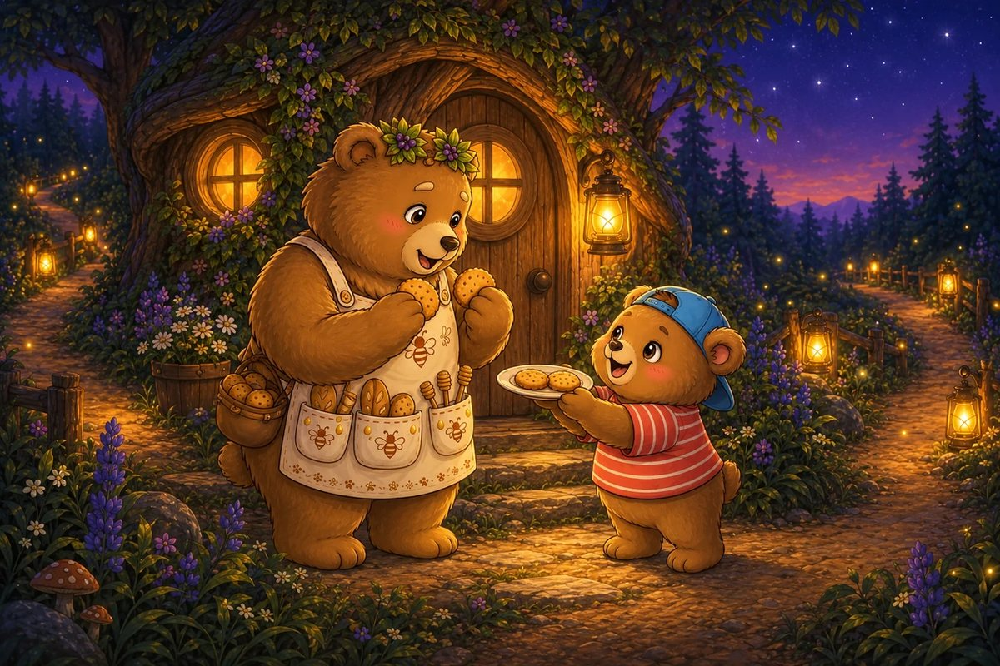

9 printed pages · 1.6 MB · A4 or US Letter. Download PDF · Open PDF to printOpens in a new tab. Use the PDF viewer's Print control. To use less ink, read online and choose only the questions on page 9 in Print.

Page 1 of 7 · Two Dark Paths
The woodland picnic ends beneath a purple sky. Ted-E-Bear has 8 little lanterns. One path leads to Honey-Beats’s cottage and the other leads to his own. “Nobody should walk home in the dark,” Ted says.
Try it: If Ted shares 8 lanterns equally between 2 paths, how many lanterns light each path?
2
3
4
6
Show the answer
4. A half means two equal groups. Share one lantern to each path until all 8 are used: 4 on each path.

Page 2 of 7 · The Windy Bend
At the bend, the wind blows out 2 of Honey-Beats’s 4 lanterns. Ted hears a worried little hum beyond the trees and turns back.
Try it: Honey-Beats had 4 glowing lanterns and 2 went out. How many are still glowing?
1
2
3
4
Show the answer
2. Take away the 2 lanterns that went out: 4 − 2 = 2.

Page 3 of 7 · A Brave Small Glow
Two lanterns are not much, but Honey-Beats holds them high. “Small lights still count,” she says. Ted places one lantern on each side of the narrow bridge.
Try it: Ted doubles 1 lantern so both sides match. How many lanterns are there altogether?
1
2
3
4
Show the answer
2. Double 1 means 1 + 1. That makes 2.

Page 4 of 7 · Fireflies Join In
Three fireflies settle near each lantern. Their gold-green light makes the bridge sparkle, and Honey-Beats’s shoulders finally relax.
Try it: There are 2 lanterns with 3 fireflies beside each one. How many fireflies are helping?
4
5
6
8
Show the answer
6. There are two equal groups of 3. Count 3 + 3 = 6 fireflies.

Page 5 of 7 · The Last Hill
The cottage window appears at the top of the hill. Ted has 6 lanterns left in his wagon and wants both friends to carry the same number.
Try it: What is half of 6 lanterns?
2
3
4
6
Show the answer
3. Split 6 into two equal groups: 3 and 3. Half of 6 is 3.

Page 6 of 7 · Light in Every Window
Honey-Beats places 3 lanterns outside. Ted places 3 inside. The cottage glows like a tiny sunrise, and the dark no longer feels so large.
Try it: What is double 3?
4
5
6
8
Show the answer
6. Double 3 is two groups of 3: 3 + 3 = 6.

Page 7 of 7 · A Promise Kept
Before Ted leaves, Honey-Beats gives him half of 4 honey biscuits for his walk. “You came back for me,” she says. Ted smiles. “That is what friends do.” Both paths shine all the way home.
Try it: How many biscuits is half of 4?
1
2
3
4
Show the answer
2. Four shared into two equal parts is 2 and 2. Half of 4 is 2.
The end · Great maths
Seven questions, one story.
Try the story again without peeking, or print it and work the questions on paper. SnackPack Basic Math has the rest of the story shelf, daily practice and number games.